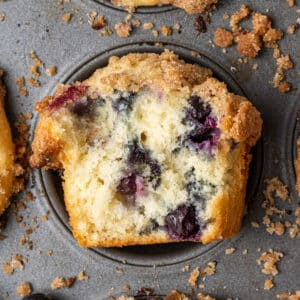

Blueberry Muffins

Simple and amazingly good blueberry muffins, this recipe makes 8 large cupcakes or 16 smaller ones perfect if you just want a delicious snack!
The best part is you can add as many blueberries as you want (personally I like a lot in my muffins)
Ingredients
- 1 1/2 all purpose flour
- 3/4 cups white sugar
- 1/2 tea spoon salt
- 2 tea spoons baking powder
- 1/3 cups vegtable oil
- 1 large egg
- 1/3 cup milk (might need more)
- 1 cup fresh blueberries (if you're like me and like extra 1 and 1/2 cups)
Making the Muffins!
- Pre-Heat your oven to 400 degrees F (200 C) greese or line with paper 8 muffin cups (16 if making small muffins)
- Whisk flour, sugar, baking powder, and salt together in a large bowl.
- In a large bowl mix together your flower,sugar,salt,baking powder.
- In a liquid measuring cup add the oil, egg and enough milk to reach the 1 cup mark.
- Pour the cup of wet ingredients into the bowl of dry ingredients and mix well, then fold in your blueberries
- Spoon your batter into the cupcake tin and bake until you can put a toothpick into the top and pull it out without getting batter on it
(usually 20-25 minutes)
- Enjoy!
Home Page